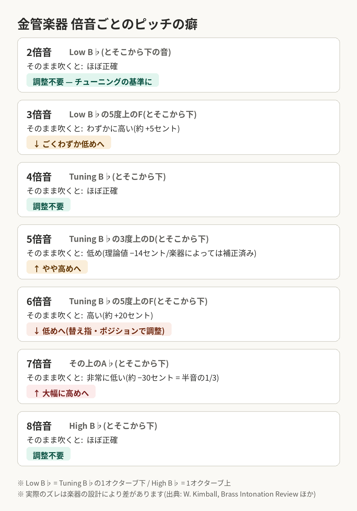

音程を合わせる力は練習で誰でも伸ばせる技術です。この記事では、音程が合うまでのステップを整理したうえで、そのために必要な2つの能力「音感」と「楽器をコントロールする能力」の鍛え方を紹介します。
「音程を合わせる」とひとことで言いますが、実際にやっていることは2つのステップに分けられます。
実は、この最初の「集合」の難易度は、楽器によってかなり違います。
金管楽器やフルートは、アンブシュアや息の向き、楽器の角度、トロンボーンならスライドの位置と、奏者側の自由度がとても高い楽器です。自由度が高いということは、表現の幅が広い一方で、気をつけないと無自覚のうちに大きく外れてしまうということでもあります。チューナー中央の2本の線に収まらないほどずれることも、まったく珍しくありません。だからこそ、これらの楽器は吹く前に出す音を頭の中でイメージする意識 (前回の記事のSong and Wind の考え方)がないと、そもそもステップ 1 の「集合」ができません。
一方、オーボエやクラリネット、サックスのように、指が合っていればある程度正しい音程が鳴りやすい楽器もあります。これらの楽器では、ステップ 1 への意識は少なめでも形になる一方で、「何もしなくてもだいたい合う」ことに甘えて、聴き比べて調整する習慣を持たないままだと、ステップ 2 がまったくできない奏者になってしまいます。正しいピッチの周りに集合しやすい楽器の人ほど、意識的に耳を使い、周りに寄せる練習が必要だと考えてください。
では、このステップを踏むために必要な能力は何でしょうか。大きく2つに分けられます。
1つめは音感。ずれに気づけなければ、直しようがありません。2つめは楽器をコントロールする能力です。管楽器は同じ運指でも、息の入れ方やアンブシュアで音程が変わる楽器です。耳で「高い」と分かっても、楽器で寄せられなければ音は合いません。ここからは、それぞれの中身と鍛え方を順番に見ていきます。
まず、ステップ1「だいたい同じ場所に集合する」を支えるのが相対音感です。相対音感とは、音を単独で聞いて階名を当てる絶対音感とは別物で、基準の音に対して高いか低いか、3度や5度といった音程（＝音と音の幅）など、音どうしの「関係」を捉える感覚のことです。習得に幼少期の訓練が必要とされる絶対音感と違い、相対音感は大人になってからでも、練習した分だけ鍛えられると言われています。鍛える価値のある音感です。
そして、ステップ2の「聴き比べて寄せる」を達成するために必要な能力が、うなりを聞く力です。音程がずれていると、「ワンワンワン」という音の揺れ＝うなりが聞こえます。これは2つの音の周波数がずれているときに起こる物理現象で、ずれが大きいほど速く、合ってくるほどゆっくりになり、ぴったり合うと消えます。この揺れに気づけるようになると、うなりを頼りに、合う場所まで正確に寄せていけるようになります。
最初の一歩は、実際に声に出して歌うことです。これから吹くフレーズを、まず声で歌ってみて、音程のイメージを作ることで、楽器で吹いた音が合っていない時に違和感を持てるようになります。イメージが正確になるほど、最初の音が「だいたい合っている場所」に着地するようになります。
チューナーやハーモニーディレクター、スマホのアプリなどで基準音（ドローン）を鳴らしっぱなしにして、その上でロングトーンや音階を吹きます。
自分の音と基準音を聴き比べて高いのか低いのかを判断し、基準音に合うように調整することを常に意識しましょう。判断がつかないときは、音程をどちらかにほんの少し動かしてみてください。うなりがゆっくりになればその方向が正解、速くなれば逆方向です。向きが分かったら、あとはうなりが消える方向へ少しずつ動かして調整します。「ずれの向きを判断する → 消える方向に動かす」。この一連の流れを、なるべく短い時間でできるように練習しましょう。合奏では、これを演奏しながら瞬時にやることになります。
ユニゾンで合わせられるようになったら、基準音に対して5度上、3度上など、違う音を当ててみてください。合っているときの響きをよく聴いて、その感覚を覚えて、いつでも再現できるようにしていきましょう。
ドローン練習でチューナーを使うときは、順番が大切です。先にメーターを見て針に合わせるのではなく、まず耳で合わせて、そのあとにチューナーで確認するようにしましょう。「合ったと思ったけど少し高かった」と分かったら、自分の感覚のほうを修正しましょう。
音感がまだ育っていない段階では、チューナーを積極的に使ってください。ずれた音を「合っている」と思い込んで練習すると、その状態が定着してしまいます。耳で合わせたつもりの音をチューナーで確かめて、感覚と現実のずれを埋めていきましょう。自身に音感が正しく身についているかを確認する一つの目安として、普段の合奏で「音程が濁って気持ち悪いな」と感じる場面がどれくらいあるかを思い出してみてください。その回数が少ない人ほど音感のトレーニングが必要です。合奏で誰も彼もが完璧に合っていることはまずないので、気にならないのは、ずれに気づけていないだけの可能性が高いのです。まずは違和感に気づけるようになるよう、ドローン練習とチューナーでの答え合わせを積み重ねていきましょう。
楽器がなくても、スマホひとつで音感は鍛えられます。通学・通勤や休憩のすきま時間に使えるアプリを2つ紹介します。
耳でずれに気づけるようになったら、次はそのずれを楽器で直せる体を作ります。中身は3つ。チューニング、音程を上げ下げする技術、そして楽器の癖の把握です。
チューニングでは、いちばん良い音色で、無理なく吹けるポイントで音を出すことを意識しましょう。口や息で音程を作りにいかず自然体で吹き、そのときのピッチがちょうど良くなるように、楽器側（抜差管など）を調整します。口先で無理に作った音でチューニングを合わせると、その場では合っていても、曲の中で維持できません。無理のあるセッティングで吹き続けると、疲れとともに音色もピッチの調節も崩れてしまいます。
とはいえ、いちばん良い音色でニュートラルに吹くというのは、そう簡単なことではありません。楽器を出してすぐに完璧なチューニングを目指すのは難しいでしょう。ウォーミングアップのメニューをある程度こなして体を楽器が吹ける状態に慣らしてから、チューニングB♭だけでなくいろいろな音を吹いて、ニュートラルな吹き方を探りましょう。そのあとにチューニングをすると、うまくいきやすいです。
演奏中にピッチを周りに寄せていく調整は、息のスピードや量、アンブシュア、口の中の空間（母音の形）などで行います。楽器によっては、スライドや抜差管、替え指を使った調整も有効です（トロンボーンやトランペットなど、楽器の側で微調整ができる場合は、そちらでの調整を優先しましょう）。
楽器ごとにコツが異なるので、同じ楽器の周りの人とノウハウを共有して、自分の調整の引き出しを増やしていきましょう。
どの楽器にも、構造上どうしても高くなりやすい音、低くなりやすい音があります。こうした癖には、「この楽器のこの音は高くなりやすい」と一般的に知られているものもあれば、楽器の個体差や奏法の違いによって、その人にだけあらわれるものもあります。まずは自分の楽器について一般的に言われていることを知り、そのうえで、自分だけの癖を普段の練習の中で調べて把握していきましょう。癖を知っていれば、その音が来る前から準備ができます。ずれてから直すのではなく、ずれる前に先回りして直す。これができるようになると奏者として一段階レベルが上がり、自分でも上達の実感が得られるはずです。
